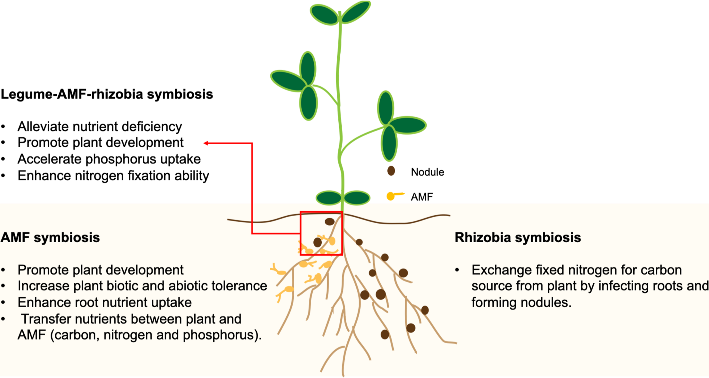
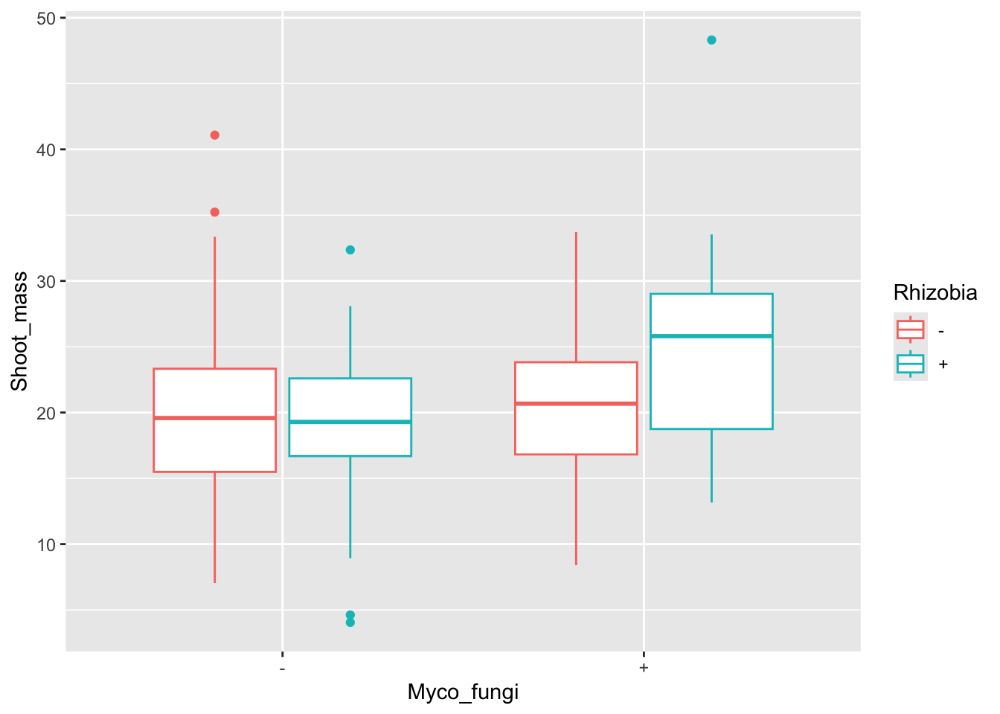

library(tidyverse)
# you may need to install this package
require(MuMIn) # to use AICc()
library(lme4) # for LMEs11 Model selection
11.1 Lesson preamble
Learning objectives
- Understand the difference between likelihood estimation/inference and model selection
- Understand intuition for and the use of AIC for model selection
- Perform model selection on simple linear models, generalized linear models, and mixed-effect models
11.2 What is model selection?
So far in class, we have covered two of the basic approaches to statistics: descriptive statistics, where we describe the properties of the data we observe, and inferential statistics, where we try to understand the properties of an underlying population and process that gave rise to our observed data. Our approach to inferential statistics involved proposing a potential “model” of the data (i.e., it came from a normal distribution, or a binomial process), then estimating the most likely parameters of that model that gave rise to our data (e.g. via maximum likelihood estimation done by hand or within a regression framework). Often, we augmented this approach by conducting a hypothesis test to deciding if a particular set of parameter values could have plausibly given rise to the data. Hypothesis testing is just one form of decision-making in statistics. More generally, we are often interested in deciding if the models we build are appropriate descriptions of how the world works (given the data we have and use to fit those models), or what among a set of candidate models is the “best”. This practice is called model selection and is the focus of this lecture.
11.2.1 Examples
Hypothesis testing is a kind of model selection. For example, for data \(x_1,\dots,x_n \sim f(x|\theta)\), testing \(H_0 \colon \theta = \theta_0\) vs \(H_1 \colon \theta \neq \theta_0\) is equivalent to choosing between models \(M_0 \colon f(x|\theta)\) and \(M_1 \colon f(x|\theta_0)\).
Suppose we regress \(y\) on the 1st, 2nd, \(\dots\), \(p\)th powers of a covariate \(x\):
\[y = \beta_0 + \beta_1 x + \beta_2 x^2 + \cdots + \beta_p x^p.\]
This gives rise to a sequence of models \(M_1,M_2,\dots,M_p\) of the data generative process. Which model is the best description of the data? Although the full model is more flexible in that it has more parameters than, say, the model in which all second and higher order terms are \(=0\), it is more prone to overfitting. Choosing between a sequence of nested linear models like this is a classic model selection problem.
- Suppose we would like to model the relationship between the expression of each coding gene in the human genome (i.e., the number of transcripts produced, \(x_i\)) and, say, an individual’s height. If there are \(p\) genes for which we have measurements and only \(n \ll p\) observations, it is not possible to fit a linear model of the form
\[y = \beta_0 + \beta_1 x_{1} + \dots + \beta_p x_{p}.\]
(The reason is that there are infinitely many solutions to the likelihood maximization problem.) In this case, we might want to select a subset of the covariates which best explain the available data. Of \(x_1,\dots,x_p\), which are most informative? This too is a kind of model selection problem.
11.3 The Akaike information criterion (AIC)
Rather than (mindlessly) adding and removing predictors, it is important to build models that are based in evidence from good theory and the literature. We can then weigh how much the data supports each model using the Aikake information criterion (AIC)
Suppose we have data \(y_1,\dots,y_n\) that are drawn from a distribution \(f\) and a set of candidate models
\[M_j = \{p_j(y|\theta_j)\}.\]
It is possible under this setup to find the maximum likelihood estimators for each of the candidate models; it is, however, difficult to compare these models in that the parameters underlying each model might not match (i.e., the models may not be nested). The AIC overcomes this issue, and despite having a lengthy and complicated derivation, is a metric which balances two things: 1) the goodness-of-fit of the model and 2) the number of parameters fitted. There are other methods for model selection that are similar to AIC (such as BIC, \(C_p\)) that follow similar principles but use different penalties.
The intuition and formula for the AIC is as follows. If \(\hat{\theta}_{j,\text{MLE}}\) is the MLE for \(\theta\) under model \(M_j\), then we can measure the distance between the ground truth (i.e., distribution \(f\) of the data) and fitted model \(\hat{p}_j = p_j(y|\hat{\theta}_{j,\text{MLE}})\) using a metric called the Kullback-Leibler divergence:
\[D_{KL}(p, \hat{p}_j) = \int p(y) \log p(y) \text{d} y - \int p(y) \log \hat{p_j}(y) \text{d} y. \]
Minimizing the Kullback-Leibler divergence (distance) between the ground truth and density \(j\) is a principled way to preform model selection, and forms the basis for the AIC. Note that minimizing only involves the second integral, and we can estimate the integral with an average
\[\frac{1}{n} \log L(\hat{\theta}_{j,\text{MLE}}) = \frac{1}{n} \sum_{i=1}^n \log p(y_i|\hat{\theta}_{j,\text{MLE}})\]
Importantly, AIC corrects for the fact this is an unbiased estimator of the divergence by adding \(d_j/n\), where \(d_j = \text{dim}(M_j)\). This term is what penalizes models with a large number of parameters. So,
\[\text{AIC} = - 2 \log L(\hat{\theta}_{j,\text{MLE}}) + 2 d_j.\]
Notice we have multiplied the preceding quantities by \(-2n\) to get the above expression; this does not change anything, and is largely for historical reasons. Based on the AIC expression, it is clear 1) the higher the likelihood, the lower the AIC; 2) introducing more parameters into the model without changing the likelihood results in a greater value for the AIC. The balance between goodness-of-fit (likelihood) and the number of parameters (the potential to overfit) is what AIC tries to optimize in choosing between candidate models. As we have shown here, that balance is struck by minimizing the distance between candidate models and the ground truth while correcting for bias introduced by having models of different dimensions.
It is important to remember that AIC only tells us the quality of a model relative to other models and should be used after making an informed decision on candidate models.
11.3.1 \(\text{AIC}_c\) for small sample sizes
When the sample size is small, AIC may select models with too many parameters (i.e., AIC will overfit). It is sometimes convenient to, when sample sizes are small (\(\frac{n}{K} < 40\) is a commonly used rule-of-thumb, where \(K\) is the total number of parameters) use the following metric to choose between candidate models:
\[\text{AIC}_c = \text{AIC} + \frac{2d_j(d_j+1)}{n-d_j-1}\]
\(\text{AIC}_c\) is like AIC, but with an extra penalty term for the number of parameters. As n increases, this penalty term converges to 0 and so \(\text{AIC}_c\) converges to AIC and the results will be similar.
11.4 Model selection for simple linear models
11.4.1 Example 1: Microbial mutualists
In 2016, Afkhami and Stinchcombe investigated the effects of multiple microbial mutualists on the performance of the model legume, Medicago truncatula. These microbial mutualists offer different rewards to their plant host; rhizobia bacteria provide fixed nitrogen; arbuscular mycorrhizal fungi (AMF) help transfer other nutrients like phosphorus. Rhizobia form structures called “nodules” on the roots of their legume hosts, where they reside and exchange fixed nitrogen for carbon from the plant.

In this experiment, plants were inoculated with either both microbial partners, one microbial partner, or none. Measures of plant performance such as above-ground and below-ground biomass, and mutualist performance (nodule count and biomass) were collected.
medicago<-read.csv("data/medicago.csv")
# convert to factor
cols<-c("Block","Plant_ID","Myco_fungi","Rhizobia")
medicago[cols]<-lapply(medicago[cols],factor)
str(medicago)'data.frame': 120 obs. of 8 variables:
$ Block : Factor w/ 5 levels "1","2","3","4",..: 1 1 1 1 1 1 1 1 1 1 ...
$ Plant_ID : Factor w/ 120 levels "1","2","3","4",..: 1 2 3 4 5 6 7 8 9 10 ...
$ Myco_fungi : Factor w/ 2 levels "-","+": 2 1 1 2 1 1 1 2 2 1 ...
$ Rhizobia : Factor w/ 2 levels "-","+": 2 1 2 2 2 2 1 1 1 1 ...
$ Shoot_mass : num 18 14.5 23 25.3 17.8 ...
$ Root_mass : num NA NA NA 28.1 NA ...
$ Nodule_count: int NA NA 40 39 NA 53 0 0 NA NA ...
$ Nodule_mass : num NA NA 0.463 0.726 0.33 NA NA NA NA NA ...Both rhizobia and mycorrhizal fungi interact with the root structures of their plant host. Rhizobia are housed in nodules, specialized root structures, while mycorrhizal fungi can make filamentous branches, hyphae, on and inside plant roots. Therefore, we could be interested in testing the effects of both microbial partners on belowground (root) biomass. Let’s plot the data!
ggplot(aes(x=Myco_fungi,y=Root_mass,colour=Rhizobia), data=medicago)+
geom_boxplot()Warning: Removed 67 rows containing non-finite outside the scale range
(`stat_boxplot()`).
It looks like plants inoculated with rhizobia and fungi had higher root biomass. Let’s look at the model.
# main effects + interaction
root1<-lm(Root_mass~Myco_fungi+Rhizobia+Myco_fungi:Rhizobia,
data=medicago)
# or simplify to Myco_fungi*Rhizobia
summary(root1)
Call:
lm(formula = Root_mass ~ Myco_fungi + Rhizobia + Myco_fungi:Rhizobia,
data = medicago)
Residuals:
Min 1Q Median 3Q Max
-28.032 -8.557 -1.709 4.909 36.523
Coefficients:
Estimate Std. Error t value Pr(>|t|)
(Intercept) 31.9963 3.5188 9.093 4.29e-12 ***
Myco_fungi+ -2.8121 5.0711 -0.555 0.582
Rhizobia+ -0.4129 5.1795 -0.080 0.937
Myco_fungi+:Rhizobia+ 5.0162 7.2487 0.692 0.492
---
Signif. codes: 0 '***' 0.001 '**' 0.01 '*' 0.05 '.' 0.1 ' ' 1
Residual standard error: 13.17 on 49 degrees of freedom
(67 observations deleted due to missingness)
Multiple R-squared: 0.01675, Adjusted R-squared: -0.04345
F-statistic: 0.2782 on 3 and 49 DF, p-value: 0.8409# no significant interaction! perhaps a model with just the main effects?
# main effects only
root2<-lm(Root_mass~Myco_fungi+Rhizobia,
data=medicago)
summary(root2)
Call:
lm(formula = Root_mass ~ Myco_fungi + Rhizobia, data = medicago)
Residuals:
Min 1Q Median 3Q Max
-29.305 -7.941 -2.612 5.790 37.705
Coefficients:
Estimate Std. Error t value Pr(>|t|)
(Intercept) 30.8142 3.0603 10.069 1.27e-13 ***
Myco_fungi+ -0.3571 3.6046 -0.099 0.921
Rhizobia+ 2.1483 3.6046 0.596 0.554
---
Signif. codes: 0 '***' 0.001 '**' 0.01 '*' 0.05 '.' 0.1 ' ' 1
Residual standard error: 13.1 on 50 degrees of freedom
(67 observations deleted due to missingness)
Multiple R-squared: 0.007138, Adjusted R-squared: -0.03258
F-statistic: 0.1797 on 2 and 50 DF, p-value: 0.836Unfortunately, the models do not show significant differences between inoculation treatments. But let’s compare these models using AIC. In this case, \(\frac{n/K}\) is at the suggested threshold, so we can use the function AIC() in the stats package or AICc() from the MuMin package.
AIC(root1,root2) df AIC
root1 5 429.4784
root2 4 427.9939AICc(root1,root2) df AICc
root1 5 430.7550
root2 4 428.8273We can see that both AIC and \(\text{AIC}_c\) yield similar results. Based on the above, the model without the interaction term is a better fit to the data (lower score). However, the scores for both models are really close! How do we decide which model(s) to interpret? Statisticians have thought about this problem and it turns out that models with delta AIC (or other criterion) less than 2 are considered to be just as good as the top model and thus we shouldn’t just discount them.
Plant investment to the roots is important for microbial mutualist association, but what about aboveground biomass? Could this be impacted by microbial associations?
ggplot(aes(x=Myco_fungi,y=Shoot_mass,colour=Rhizobia), data=medicago)+
geom_boxplot()Warning: Removed 1 row containing non-finite outside the scale range
(`stat_boxplot()`).
# main effects + interaction
shoot1<-lm(Shoot_mass~Myco_fungi+Rhizobia+Myco_fungi:Rhizobia,
data=medicago)
summary(shoot1)
Call:
lm(formula = Shoot_mass ~ Myco_fungi + Rhizobia + Myco_fungi:Rhizobia,
data = medicago)
Residuals:
Min 1Q Median 3Q Max
-14.9064 -4.9520 0.5606 3.9902 23.7974
Coefficients:
Estimate Std. Error t value Pr(>|t|)
(Intercept) 20.114 1.289 15.610 <2e-16 ***
Myco_fungi+ -0.252 1.838 -0.137 0.8912
Rhizobia+ -1.157 1.822 -0.635 0.5268
Myco_fungi+:Rhizobia+ 5.807 2.588 2.244 0.0268 *
---
Signif. codes: 0 '***' 0.001 '**' 0.01 '*' 0.05 '.' 0.1 ' ' 1
Residual standard error: 7.058 on 115 degrees of freedom
(1 observation deleted due to missingness)
Multiple R-squared: 0.08824, Adjusted R-squared: 0.06446
F-statistic: 3.71 on 3 and 115 DF, p-value: 0.01366Although there are similar trends to the data as with root biomass, it looks like shoot biomass is significantly different between treatments.
11.4.2 Example 2: Allometric scaling of metabolism
This example comes from Dolph Schluter’s “Model Selection” R workshop
Savage et al. (2004) investigated competing claims for the value of the scaling parameter, \[\beta\], in mammalian basal metabolic rate (BMR):
\[B M R = \alpha \text{M}^\beta\]
where \[B M R\] is basal metabolic rate, \[M\] is body mass, and \[\alpha\] is constant.
On a log scale, this can be written as:
\[\log B M R = \log(\alpha) + \beta\log(M)\] where \[\beta\] is now a slope parameter of a linear model. Theory based on optimization of hydrodynamic flows through the circulation system predicts that the exponent should be \[\beta = \frac{3}{4}\] but we would expect \[\beta = \frac{2}{3}\] if metabolic rate scales with heat dissipation and therefore body surface area. These alternative scaling relationships represent distinct hypotheses. We will use them as candidate models and apply model selection procedures to compare their fits to data.
Savage et al. compiled data from 626 species of mammals. To simplify, and reduce possible effects of non-independence of species data points, they took the average of \[\log(B M R)\] among species in small intervals of \[\log(M)\]. Body mass is in grams, whereas basal metabolic rate is in watts.
# download dataset - note the number of rows
bmr<-read.csv(url("https://www.zoology.ubc.ca/~bio501/R/data/bmr.csv"),
stringsAsFactors = FALSE)
bmr$logmass<-log(bmr$mass.g)
bmr$logbmr<-log(bmr$bmr.w)
head(bmr) mass.g bmr.w logmass logbmr
1 2.4 0.063 0.8754687 -2.764621
2 3.7 0.027 1.3083328 -3.611918
3 4.6 0.067 1.5260563 -2.703063
4 5.6 0.108 1.7227666 -2.225624
5 7.3 0.103 1.9878743 -2.273026
6 8.9 0.102 2.1860513 -2.282782# plot the data on a log scale
ggplot(aes(x=logmass,y=logbmr), data=bmr)+
geom_point()
Let’s fit a linear model on this data!
mod<-lm(logbmr~logmass, data=bmr)
summary(mod) # notice the estimate of the slope
Call:
lm(formula = logbmr ~ logmass, data = bmr)
Residuals:
Min 1Q Median 3Q Max
-1.18771 -0.13741 0.01169 0.17836 0.62592
Coefficients:
Estimate Std. Error t value Pr(>|t|)
(Intercept) -4.00329 0.09858 -40.61 <2e-16 ***
logmass 0.73654 0.01261 58.42 <2e-16 ***
---
Signif. codes: 0 '***' 0.001 '**' 0.01 '*' 0.05 '.' 0.1 ' ' 1
Residual standard error: 0.3243 on 50 degrees of freedom
Multiple R-squared: 0.9856, Adjusted R-squared: 0.9853
F-statistic: 3413 on 1 and 50 DF, p-value: < 2.2e-16Let’s fit the two candidate models, where \[\beta = \frac{3}{4}\] or \[\beta = \frac{2}{3}\]
# fit models
mod1<-lm(logbmr~1+offset((3/4)*logmass), data=bmr)
mod2<-lm(logbmr~1+offset((2/3)*logmass), data=bmr)
# plot
ggplot(aes(x=logmass,y=logbmr), data=bmr)+
geom_point()+
geom_abline(intercept=coef(mod1),slope=3/4,colour="blue")+
geom_abline(intercept=coef(mod2),slope=2/3,colour="red")
Now let’s compare the AIC scores of the two models.
AICc(mod1,mod2) df AICc
mod1 2 33.82759
mod2 2 57.56350By this criterion, which model is the best?
11.5 Model selection with Generalized Linear Models (GLMs)
11.5.1 Example 3: Forest fire risk
Last class, we used logistic regression to fit a dataset from Abid and Izeboudjen 2020 to predict forest fire occurrence based on environmental conditions in Algeria. We created several predictive models for the relationship between temperature, relative humidity, wind speed, and rain fall on fire risk. You may recall that in the summary of each GLM, the model AIC score was also included. This provides the same score as using AIC() on the model. Importantly, summary() on a GLM will always return AIC and not \(\text{AIC}_c\), so you may need to run \(\text{AIC}_c\) separately, if appropriate for your model.
Let’s re-create the models. First, we’ll do the same pre-processing to rename columns to more intuitive names.
forest_fires <- read_csv(
"https://raw.githubusercontent.com/das-amlan/Forest-Fire-Prediction/refs/heads/main/forest_fires.csv",
)Rows: 243 Columns: 15
── Column specification ────────────────────────────────────────────────────────
Delimiter: ","
dbl (15): day, month, year, Temperature, RH, Ws, Rain, FFMC, DMC, DC, ISI, B...
ℹ Use `spec()` to retrieve the full column specification for this data.
ℹ Specify the column types or set `show_col_types = FALSE` to quiet this message.forest_fires <- forest_fires %>%
select(
HasFire = Classes,
Temperature,
RelativeHumidity = RH,
WindSpeed = Ws,
Rainfall = Rain
)Now, let’s fit the data using a GLM:
model_ws <- glm(HasFire ~ WindSpeed,
data = forest_fires,
family = binomial(link = "logit")
)
summary(model_ws)
Call:
glm(formula = HasFire ~ WindSpeed, family = binomial(link = "logit"),
data = forest_fires)
Coefficients:
Estimate Std. Error z value Pr(>|z|)
(Intercept) 1.03997 0.73404 1.417 0.157
WindSpeed -0.05049 0.04650 -1.086 0.278
(Dispersion parameter for binomial family taken to be 1)
Null deviance: 332.90 on 242 degrees of freedom
Residual deviance: 331.71 on 241 degrees of freedom
AIC: 335.71
Number of Fisher Scoring iterations: 4And the improved model incorporating temperature, relative humidity, and rainfall:
model_2 <- glm(HasFire ~ Rainfall + RelativeHumidity + Temperature,
data = forest_fires,
family = binomial(link = "logit")
)Warning: glm.fit: fitted probabilities numerically 0 or 1 occurredsummary(model_2)
Call:
glm(formula = HasFire ~ Rainfall + RelativeHumidity + Temperature,
family = binomial(link = "logit"), data = forest_fires)
Coefficients:
Estimate Std. Error z value Pr(>|z|)
(Intercept) -5.49046 2.87716 -1.908 0.0564 .
Rainfall -2.45730 0.54778 -4.486 7.26e-06 ***
RelativeHumidity -0.04126 0.01604 -2.573 0.0101 *
Temperature 0.28463 0.07146 3.983 6.81e-05 ***
---
Signif. codes: 0 '***' 0.001 '**' 0.01 '*' 0.05 '.' 0.1 ' ' 1
(Dispersion parameter for binomial family taken to be 1)
Null deviance: 332.90 on 242 degrees of freedom
Residual deviance: 196.53 on 239 degrees of freedom
AIC: 204.53
Number of Fisher Scoring iterations: 7Notice anything about the AIC scores? What happens if we try using \(\text{AIC}_c\)?
AIC(model_ws, model_2) df AIC
model_ws 2 335.7131
model_2 4 204.530411.5.2 Example 4: Disease virulence
Previously, we explored the dataset from Farrell and Davies (2019). Let’s try a simple GLM to see if host evolutionary isolation (EvoIso) affected the probability of death. Recall that the data is binomial and distributed according to a Bernoulli distribution. For the response, we’ll use the number of reported deaths due to disease (Deaths) out of the total number of reported cases (Cases). Luckily for us, glm() has a handy trick to specify binomial links using cbind().
disease_distance <- read_csv("https://eeb313.github.io/lectures/data/disease_distance.csv")Rows: 4157 Columns: 24
── Column specification ────────────────────────────────────────────────────────
Delimiter: ","
chr (7): Country, Disease, Parasite, Host, HostOrder, ParaType, ParaFamily
dbl (17): Year, Cases, Deaths, Destroyed, Slaughtered, SR, EvoIso, Taxonomic...
ℹ Use `spec()` to retrieve the full column specification for this data.
ℹ Specify the column types or set `show_col_types = FALSE` to quiet this message.model <- glm(cbind(Deaths,Cases-Deaths) ~ EvoIso,
family = "binomial",
data = disease_distance)
summary(model)
Call:
glm(formula = cbind(Deaths, Cases - Deaths) ~ EvoIso, family = "binomial",
data = disease_distance)
Coefficients:
Estimate Std. Error z value Pr(>|z|)
(Intercept) -2.763e+00 4.878e-03 -566.43 <2e-16 ***
EvoIso 1.340e-03 4.611e-05 29.06 <2e-16 ***
---
Signif. codes: 0 '***' 0.001 '**' 0.01 '*' 0.05 '.' 0.1 ' ' 1
(Dispersion parameter for binomial family taken to be 1)
Null deviance: 1220530 on 4156 degrees of freedom
Residual deviance: 1219677 on 4155 degrees of freedom
AIC: 1225780
Number of Fisher Scoring iterations: 6Suppose we want to see if other factors affect the probability of death, in addition to or outside of evolutionary isolation. What factors could we test?
Perhaps the type of parasite also affects the probability of death. Let’s compare the models.
model2 <- glm(cbind(Deaths,Cases-Deaths) ~ EvoIso + ParaType,
family = "binomial",
data = disease_distance)
AICc(model,model2) df AICc
model 2 1225779.7
model2 7 792182.4Note that we could continue to add terms to the model that would make it a better fit to the data. This veers towards p-hacking territory which we want to avoid!! This section is to show you that AIC works the same for GLM. In practice, you should first build your models based on good theory and then compare them.
11.6 Model selection for Linear Mixed Effects Models (LMEs)
The general principles of model selection are the same for LMEs.
Model selection for mixed models is even more complicated, due to the addition of group/random effects. A procedure that is commonly used to perform selection of LMEs is as follows:
Create a saturated model that includes all fixed effects (and their interactions[^interaction]) and group effects you wish to test.
Optimize the structure of group effects by comparing models with the same saturated fixed effects structure but differing group effect structures. These models should be fitted using Restricted Maximum Likelihood (i.e.,
REML = TRUE), since variance component estimation will be biased otherwise. The optimal group effect structure is the one that provides the lowest AIC. Do not remove group effects if they are included to account for non-independence in your data. Skip this step if group effects must be included given the hierarchical structure (i.e., nestedness) in the data.Optimize the fixed-effect structure by comparing models with the same optimized (or necessary) group effects but with differing fixed effect structures. These models should be fitted with Maximum Likelihood (i.e.,
REML = FALSE) to prevent biased fixed-effect parameter estimates. Models can be selected on the basis of AIC (the lower the better), by comparing nested models using a likelihood ratio test (LRT), or both.Fit the final model with optimized fixed and group effects using REML and interpret your results.
11.6.1 Example 5: Species richness
Let’s try this using the RIKZ dataset we used in the previous lecture. Recall that this dataset examines species richness in intertidal areas.
rikz <- read_tsv("https://uoftcoders.github.io/rcourse/data/rikz_data.txt")Rows: 45 Columns: 5
── Column specification ────────────────────────────────────────────────────────
Delimiter: "\t"
dbl (5): Richness, Exposure, NAP, Beach, Site
ℹ Use `spec()` to retrieve the full column specification for this data.
ℹ Specify the column types or set `show_col_types = FALSE` to quiet this message.# Site and Beach are factors
rikz <- rikz %>%
mutate(
Site = factor(Site),
Beach = factor(Beach)
)
str(rikz)tibble [45 × 5] (S3: tbl_df/tbl/data.frame)
$ Richness: num [1:45] 11 10 13 11 10 8 9 8 19 17 ...
$ Exposure: num [1:45] 10 10 10 10 10 8 8 8 8 8 ...
$ NAP : num [1:45] 0.045 -1.036 -1.336 0.616 -0.684 ...
$ Beach : Factor w/ 9 levels "1","2","3","4",..: 1 1 1 1 1 2 2 2 2 2 ...
$ Site : Factor w/ 5 levels "1","2","3","4",..: 1 2 3 4 5 1 2 3 4 5 ...We used a mixed-effect model with a group effect on Beach to view different trends in species richness and NAP across beaches. In this model, we are including group effects for intercepts only. Like with GLMs, AIC is included in the summary of LMEs.
mixed_model_IntOnly_orig <- lmer(Richness ~ NAP + (1|Beach),
data = rikz, REML = FALSE)
summary(mixed_model_IntOnly_orig)Linear mixed model fit by maximum likelihood ['lmerMod']
Formula: Richness ~ NAP + (1 | Beach)
Data: rikz
AIC BIC logLik -2*log(L) df.resid
249.8 257.1 -120.9 241.8 41
Scaled residuals:
Min 1Q Median 3Q Max
-1.4258 -0.5010 -0.1791 0.2452 4.0452
Random effects:
Groups Name Variance Std.Dev.
Beach (Intercept) 7.507 2.740
Residual 9.111 3.018
Number of obs: 45, groups: Beach, 9
Fixed effects:
Estimate Std. Error t value
(Intercept) 6.5844 1.0321 6.380
NAP -2.5757 0.4873 -5.285
Correlation of Fixed Effects:
(Intr)
NAP -0.164In this model selection example, we want to compare group effect structure so we will set REML = TRUE. Notice that the model summary no longer includes AIC.
mixed_model_IntOnly <- lmer(Richness ~ NAP + (1|Beach),
data = rikz, REML = TRUE)
summary(mixed_model_IntOnly)Linear mixed model fit by REML ['lmerMod']
Formula: Richness ~ NAP + (1 | Beach)
Data: rikz
REML criterion at convergence: 239.5
Scaled residuals:
Min 1Q Median 3Q Max
-1.4227 -0.4848 -0.1576 0.2519 3.9794
Random effects:
Groups Name Variance Std.Dev.
Beach (Intercept) 8.668 2.944
Residual 9.362 3.060
Number of obs: 45, groups: Beach, 9
Fixed effects:
Estimate Std. Error t value
(Intercept) 6.5819 1.0958 6.007
NAP -2.5684 0.4947 -5.192
Correlation of Fixed Effects:
(Intr)
NAP -0.157AIC(mixed_model_IntOnly)[1] 247.4802We then extended this model to include random slopes to allow the relationship between NAP and species richness to vary by beach. However, the random slopes & intercepts model might have been too complex for our data. What about only including group effects on slopes, without intercepts?
mixed_model_SlopeOnly <- lmer(Richness ~ NAP + (0 + NAP|Beach),
data = rikz, REML = TRUE)boundary (singular) fit: see help('isSingular')Let’s compare these models using AIC:
AIC(mixed_model_IntOnly, mixed_model_SlopeOnly) df AIC
mixed_model_IntOnly 4 247.4802
mixed_model_SlopeOnly 4 260.201011.7 References and additional reading
- Johnson & Omland 2004. Model selection in ecology and evolution. Trends in Ecology and Evolution.
- Burnham & Anderson 2002. Model Selection and Multimodel Inference (2nd ed.).
- Zuur et al. 2009. Mixed Effects Models and Extensions in Ecology with R.
- Tredennick et al. 2021. A practical guide to selecting models for exploration, inference, and prediction in ecology. Ecology.